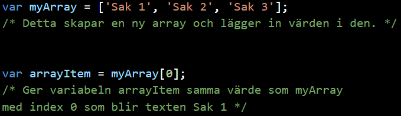

Arrays
Om man tänker sig att en variabel är som en låda så kan man tänka sig att en array en låda som håller fler lådor i sig. För att komma åt ett värde i en array så använder man ett index till den plats värdet ligger på börjat ifrån 0.
Exempel
